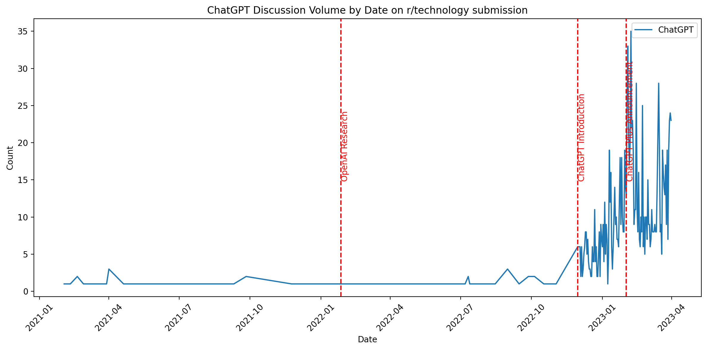
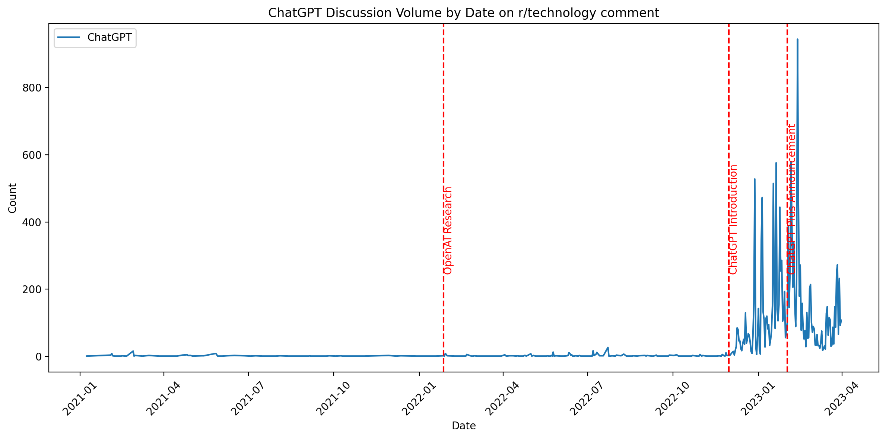
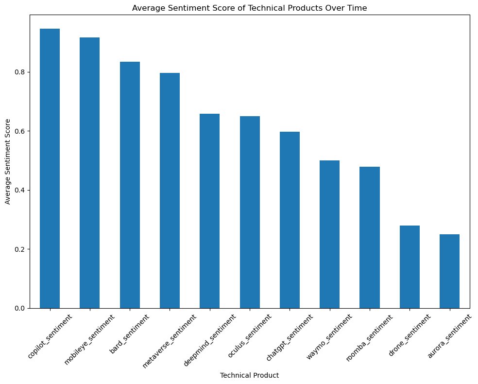
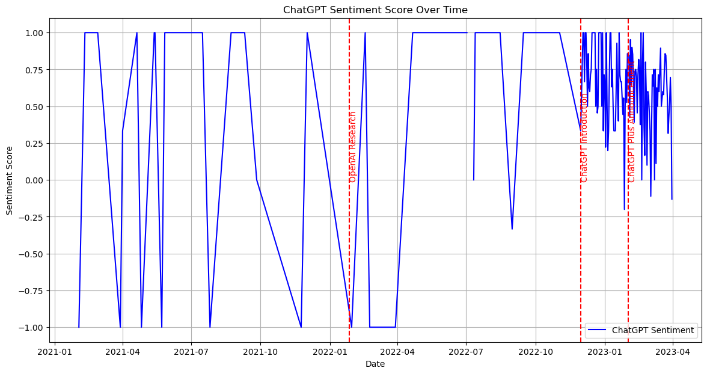
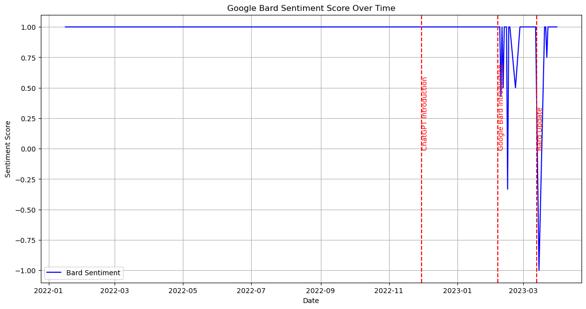
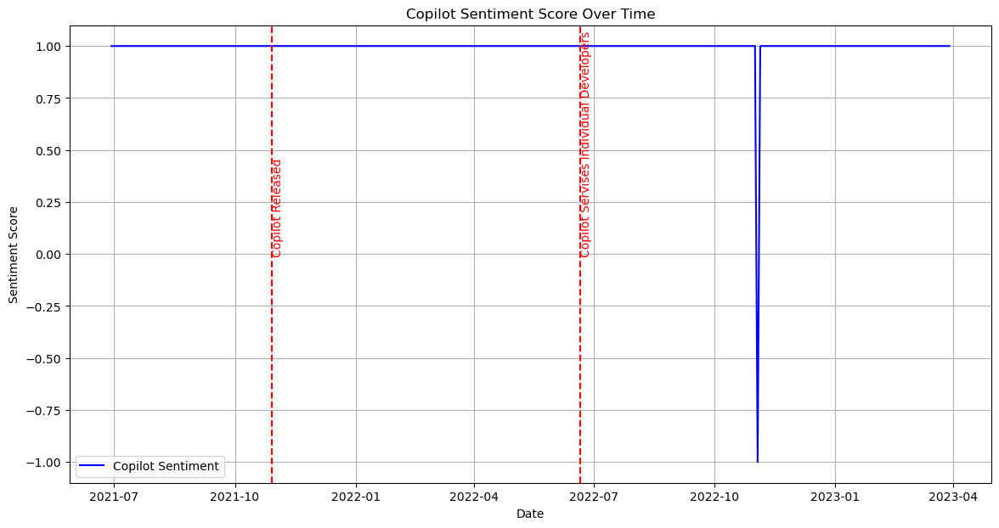

Executive Summary
In our comprehensive analysis of the r/Technology subreddit, we achieved two significant milestones: uncovering the central themes that are currently engaging the tech community and tracking how sentiments towards key tech products evolve over time.
Through our investigation into the vast conversations happening on Reddit, we’ve identified not just the major talking points like artificial intelligence and virtual reality but also the rising stars of tech discussions. Furthermore, we’ve measured the pulse of public opinion on flagship technology products through a sentiment analysis that paints a picture of how feelings and perspectives change with developments over time. Products like ChatGPT and Copilot have stood out, drawing considerable attention and discussion within the subreddit. These insights are a compass for companies looking to understand and respond to user feedback, market their products effectively, and anticipate the next wave of consumer interest. Our non-technical synthesis of community sentiment is a gauge of market temperatures—vital for any tech entity looking to stay ahead in the rapidly evolving digital landscape.
6. Identifying Most Frequently Discussed Technical Products in r/Technology
Preprocessing Text Data
To initiate our natural language processing (NLP) task, we first preprocess the text data in both submissions and comments within the r/Technology subreddit. This involves normalizing the text, checking spelling, removing stopwords to prevent bias, and lemmatizing words to convert them to their original forms. We create a pipeline to streamline these tasks for both submissions and comments.
Identifying Topics of Interest
In our investigation of the r/Technology subreddit, we prioritized several prominent technology-related topics to better understand and categorize the discourse. Specifically, we focused on “Artificial Intelligence (AI),” “Artificial General Intelligence (AGI),” “Autonomous Driving,” “Virtual Reality (VR),” and “Robotics.” These categories were selected due to their significant impact and relevance in the current technological landscape, as well as their frequent discussion among technology enthusiasts.
Our keyword strategy for analyzing the r/Technology subreddit is meticulously designed to target discussions central to each identified technological theme. Each theme, such as Artificial Intelligence or Robotics, is associated with a carefully selected set of keywords that encompass a broad range of sub-topics and related technologies. For instance, under “Artificial Intelligence,” the list spans general terms like “AI” to specific technologies and applications such as “deep learning,” “natural language processing,” and even names of prominent AI models like “BERT” and “RoBERTa.” This comprehensive coverage ensures that our analysis captures all pertinent discussions, from overarching conversations about AI to nuanced debates on its applications and ethical considerations.
Table 1: Keywords in each topic
| Artificial Intelligence | artificial intelligence, ai, machine learning, deep learning, neural network, natural language processing, |
| nlp, computer vision, ai ethics, ai policy, chatgpt, gpt-3, openai, copilot, github copilot, bard, google | |
| bard, lamda, ai dungeon, hugging face, transformer models, bert, roberta, t5, automl, tensorflow, pytorch, | |
| scikit-learn | |
| Artificial General Intelligence | agi, artificial general intelligence, deepmind, ben goertzel, ray kurzweil, nick bostrom, cognitive |
| architecture, whole brain emulation | |
| Autonomous Driving | waymo, tesla autopilot, self-driving car, autonomous vehicle, cruise automation, aurora, nuro, aptiv, |
| mobileye, lidar, radar sensor, computer vision, navigation system, v2x communication, electric vehicle, | |
| evs, adas | |
| Virtual Reality | oculus, oculus rift, oculus quest, vr headset, htc vive, sony playstation vr, samsung gear vr, virtual |
| reality, augmented reality, ar, mixed reality, mr, xr, 360-degree video, immersive technology, haptic | |
| feedback | |
| Robotics | robot, robotic, roomba, boston dynamics, industrial robot, service robot, companion robot, surgical |
| robot, drone, uav, robotic arm, manipulator, autonomous robot, robotic surgery, robotic process automation, | |
| rpa, humanoid robot |
Our keyword strategy for analyzing the r/Technology subreddit is meticulously designed to target discussions central to each identified technological theme. Each theme, such as Artificial Intelligence or Robotics, is associated with a carefully selected set of keywords that encompass a broad range of sub-topics and related technologies. For instance, under “Artificial Intelligence,” the list spans general terms like “AI” to specific technologies and applications such as “deep learning,” “natural language processing,” and even names of prominent AI models like “BERT” and “RoBERTa.” This comprehensive coverage ensures that our analysis captures all pertinent discussions, from overarching conversations about AI to nuanced debates on its applications and ethical considerations.
The relevance and specificity of our keywords are crucial for accurately extracting discussions explicitly related to the intended technological domains. Keywords like “oculus” or “tesla autopilot” are specific enough to unambiguously refer to virtual reality and autonomous driving, respectively. This targeted approach enhances the precision of our topic modeling efforts using Latent Dirichlet Allocation (LDA), reducing noise and sharpening the thematic structures that emerge from the model. Additionally, including the latest terms and technologies in our keyword list, such as “chatgpt” and “google bard,” helps our analysis remain current and adaptable to emerging trends. By leveraging these keywords, we can not only filter and categorize subreddit content effectively but also identify shifts in the technology landscape through the frequency and context of keyword mentions. This strategic use of a keyword table ensures that our analysis is focused, relevant, and insightful, offering a comprehensive view of the technological discussions within the r/Technology community.
Distribution of Topics
To gain insights into the focus areas of discussions within the r/Technology subreddit, we analyzed the distribution of posts and comments across five key topics: Artificial Intelligence (AI), Artificial General Intelligence (AGI), Autonomous Driving (Self-Drive), Virtual Reality (VR), and Robotics (Robot). The data highlights a significant skew towards AI and Robotics in both submissions and comments, indicating these are highly engaging areas within the technology community on Reddit. AI, being a broad and impactful area, sees the highest engagement, which is expected given its influence across multiple sectors and its presence in public discourse. Robotics also shows substantial discussion volume, reflecting widespread interest likely driven by advancements in consumer technology, industrial applications, and automation.
Table 2: Top 5 Topics accross Submission
| Topic | Count |
|---|---|
| AI | 5319 |
| AGI | 82 |
| Self-Drive | 57 |
| VR | 423 |
| Robot | 2821 |
Conversely, AGI and Autonomous Driving discussions are less frequent. This could suggest that while important, these topics might currently resonate less with the general r/Technology audience or are discussed in more specialized contexts not captured entirely within this subreddit.
Table 3: Top 5 Topics accross Comments
| Topic | Count |
|---|---|
| AI | 77930 |
| AGI | 1110 |
| Self-Drive | 1203 |
| VR | 19176 |
| Robot | 34484 |
Most Discussed Technical Products
Next, we identify the most frequently discussed technical products within each topic. We compile a list of key products associated with each technology theme, such as ChatGPT for AI, DeepMind for AGI, Waymo for Self-Driving, Oculus Quest for VR, and Drone for Robotics. By matching word terms and tokens, we identify comments and submissions pertaining to these products.
This table reveals the focal points of technology discussions. For instance, in AI, ChatGPT and Google Bard highlight the public’s interest in conversational AI and the developments brought forward by major tech companies. In VR, products like Oculus Quest and emerging concepts like the Metaverse indicate a strong consumer interest in immersive technologies. The focus on specific brands and products such as Waymo in Autonomous Driving shows targeted discussions likely influenced by these companies’ market activities and media coverage.The distributions and product focuses provide a clear view of what technologies captivate the community, offering insights into consumer awareness and sentiment.
Table 4: Most frequently discussed technical products within each topic
| Category | Technologies |
|---|---|
| AI | ChatGPT |
| Google Bard | |
| Github Copilot | |
| AGI | DeepMind |
| Self-Drive | Waymo |
| Mobileye | |
| Aurora | |
| VR | Oculus Quest |
| Apple AR | |
| Metaverse | |
| Robot | Drone |
| Robot Dog | |
| Humanoid Robot | |
| Roomba |
Table 5: Matching pattern of each technical product
| Category | Keywords |
|---|---|
| chatgpt | chatgpt, gpt, chatgpts, chatgptlike, open ai |
| bard | bard |
| copilot | copilot |
| deepmind | deepmind |
| waymo | waymo |
| mobileye | mobileye |
| aurora | aurora |
| oculus | oculus |
| apple | apple vr |
| metaverse | metaverse |
| drone | drone |
| dog | robot dog |
| humanoid | humanoid robot |
| roomba | roomba |
Distribution of Technical Products
To deepen our understanding of the specific interests within the r/Technology subreddit, we analyzed the distribution of discussions related to distinct technical products. This analysis helps us pinpoint which products are most talked about and gauge their impact or popularity within the community.
The distribution of submissions reveals a high level of interest in products such as ChatGPT and the concept of the Metaverse, indicating these areas are particularly engaging to the subreddit’s audience. ChatGPT stands out as the most discussed product, likely due to its recent advancements and public visibility. Similarly, the Metaverse, representing a broad range of virtual and augmented reality technologies, shows substantial interest, highlighting the community’s fascination with future digital environments.
Table 6: Top 5 Technical Products in Submissions
| Entity | Count |
|---|---|
| chatgpt | 1347 |
| bard | 104 |
| copilot | 51 |
| deepmind | 57 |
| waymo | 41 |
| mobileye | 14 |
| aurora | 8 |
| oculus | 78 |
| apple | 0 |
| metaverse | 1181 |
| drone | 848 |
| dog | 0 |
| humanoid | 0 |
| roomba | 27 |
The distribution of comments supports the trends observed in submissions, with ChatGPT and the Metaverse again leading in discussion counts. However, the volume of comments is significantly higher, suggesting these topics not only attract attention but also provoke extensive conversations and debates among users. Oculus also emerges as a major discussion point in comments, underscoring its prominence in the VR sector.
Table 7: Top 5 Technical Products in Comments
| Entity | Count |
|---|---|
| chatgpt | 16038 |
| bard | 571 |
| copilot | 631 |
| deepmind | 218 |
| waymo | 1118 |
| mobileye | 77 |
| aurora | 79 |
| oculus | 5921 |
| apple | 0 |
| metaverse | 21136 |
| drone | 8650 |
| dog | 0 |
| humanoid | 0 |
| roomba | 1973 |
This focused analysis on technical products provides valuable insights into which technologies captivate the community’s interest and which might be receiving less attention (e.g., Apple VR, Robot Dog, and Humanoid Robots showing zero counts). Understanding these dynamics can be crucial for stakeholders, including tech companies, marketers, and industry analysts, to identify current trends, potential growth areas, and consumer sentiments within the technology sector.
Moreover, the notable differences in discussion intensity between submissions and comments for certain products suggest varying levels of user engagement that could reflect broader trends in consumer interest or controversies surrounding these technologies
Time-Series Analysis of ChatGPT Discussions
Our time-series analysis reveals the evolution of discussions around ChatGPT on the r/Technology subreddit. With the first visualization representing submission volume and the second showing comments, both graphs exhibit notable trends corresponding to significant events in ChatGPT’s timeline.
The graph for submission volume indicates an initial period of relatively low activity, followed by a marked surge aligning with the public release of ChatGPT. This surge demonstrates the impact of the release on the community, capturing the influx of user interest and discussions.

Similarly, the comment volume graph illustrates a significant peak following ChatGPT’s introduction, dwarfing previous activity. A notable increase in discussions can also be seen at the time of the ChatGPT Plus announcement, showcasing the product’s growing influence and its ability to drive public conversation.

In both plots, the escalation in discussion volume post-ChatGPT introduction is evident, highlighting how technological advancements can rapidly shift the focus of community discourse. The stabilization of conversation after the initial spike may suggest that while the novelty factor wears off, the sustained interest levels indicate ChatGPT’s entrenchment in tech discussions.
The red dashed lines marking OpenAI research announcements and product releases act as indicators for major increases in discussions. This not only validates the significance of these events in catalyzing public interest but also reflects the subreddit’s responsiveness to industry news and advancements.
The time-series analysis underscores ChatGPT’s prominence in the technology conversation on Reddit and hints at the potential staying power of such AI technologies in public discourse. For stakeholders, these trends could inform strategies around product releases and community engagement, while for technologists and enthusiasts, they offer a window into the collective interest and concerns of the tech community.
7. Analyzing Mean Sentiment Scores of Technology Products Over Time
Sentiment Score of Different Topics of Technology Products
In our quest to understand the changing sentiments towards technology products, we employed a sentiment analysis model to process submissions from the r/Technology subreddit. The model, trained on social media content, categorizes sentiments as positive, negative, or neutral, aligning well with the informal and varied language used on Reddit.
We processed the submissions by labeling each with a sentiment score, then aggregated these to determine the average sentiment score associated with specific technology products over time. The graph produced from this data displays the mean sentiment scores, providing a visual representation of the community’s general feelings towards these products.
The bar chart reveals that products like Copilot and Mobileye have the highest average sentiment scores, suggesting generally positive community feedback. On the other hand, Aurora has the lowest average sentiment score, indicating more negative perceptions or perhaps dissatisfaction with this product among the subreddit users.

This analysis is particularly insightful as it not only reflects the community’s current views but can also be indicative of the perceived successes or failures of these products. It’s interesting to note the variance in sentiment scores, suggesting that while some technologies are welcomed positively, others might be facing challenges or skepticism from the tech community. Products receiving higher sentiment scores can be seen as aligning well with consumer expectations, while those with lower scores may need to address specific concerns or issues raised by the community.
Additionally, this data can be used to monitor changes in public perception over time, potentially offering early warning signs for products that begin to trend negatively, or highlighting opportunities for those with increasing positive sentiments.
Sentiment Over Time for Key Technical Products
We conducted a detailed time-series sentiment analysis for three significant technical products—ChatGPT, Google Bard, and Copilot—drawing from discussions within the r/Technology subreddit. The sentiment over time is visualized in the plots, capturing the community’s reaction to these products around key events such as releases and updates.
ChatGPT’s sentiment graph shows fluctuating sentiment scores with spikes coinciding with major product announcements. A substantial peak aligns with the release of ChatGPT Plus, which suggests a strong, likely positive, reaction from the community. Over time, while sentiment dips and recovers, the overall positive trend remains, indicating sustained approval or curiosity about ChatGPT.

The sentiment timeline for Google Bard illustrates an initial stable sentiment score with dramatic fluctuations upon its introduction and subsequent updates. The sentiment appears to fluctuate with these updates, possibly reflecting mixed community reactions to new features or changes associated with Bard.

Copilot’s sentiment trajectory presents consistent sentiment with a notable increase around the time when services were extended to individual developers. This could reflect a positively received expansion, resonating well with the developer community on Reddit.

These visualizations illustrate how community sentiment can shift significantly in response to product developments. Key takeaways include:
Event-Driven Sentiment: Major product releases and updates act as catalysts for discussion, often shifting sentiment either positively or negatively.
Community Engagement: Peaks in sentiment score graphs suggest heightened community engagement. For instance, Copilot’s service expansion to individuals shows a clear sentiment boost.
Sentiment Stabilization: After initial fluctuations, sentiment scores tend to stabilize, which might indicate the community’s adjusted perspective and acceptance of the products.
Understanding these sentiment trends offers invaluable feedback to the entities behind these products. For instance, the developers of ChatGPT might take the generally positive sentiment as an affirmation of their product’s direction. Conversely, the volatility in sentiment for Google Bard suggests a more divided reception, warranting closer attention to community feedback.
Overall, these time-series sentiment analyses provide a nuanced understanding of how key technological advancements are received over time by an informed and interested community, which can be crucial for steering product development and marketing strategies.